For iPhone and iPad
Sketch CFD
Sketch a shape, see the flow.
An educational app for learning computational fluid dynamics (CFD). Draw walls, inlets, fans, and heaters, or photograph a sketch drawn on paper, and watch the flow, gas mixing, and heat develop as the calculation runs.
Requires iOS or iPadOS 16.4 or later. In English.
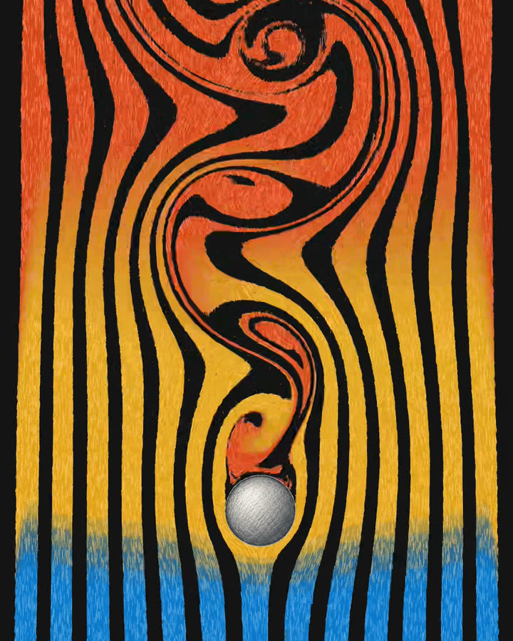
In the app
-
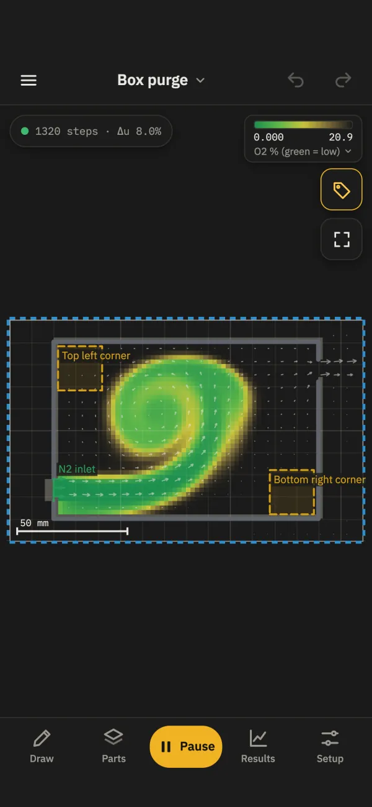
Gas share during a purge -
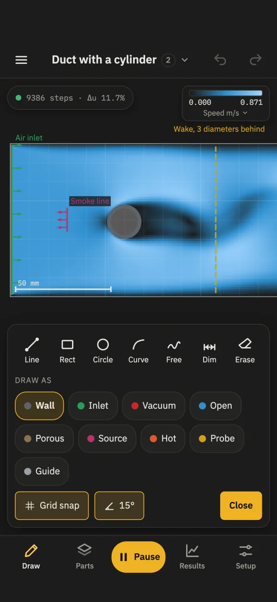
Draw tools and part roles -
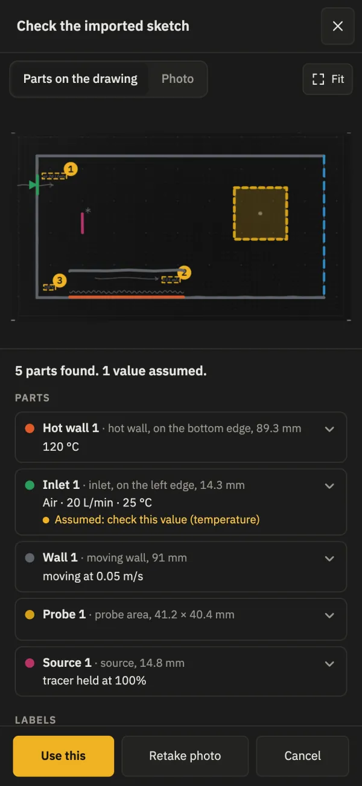
Review of the sample paper drawing -
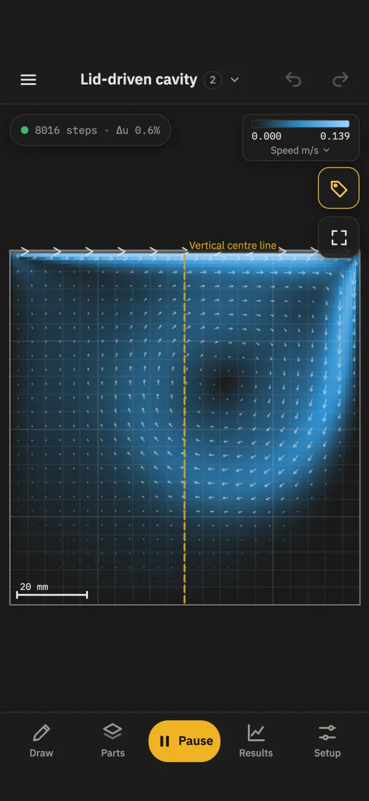
Speed in a lid-driven cavity -
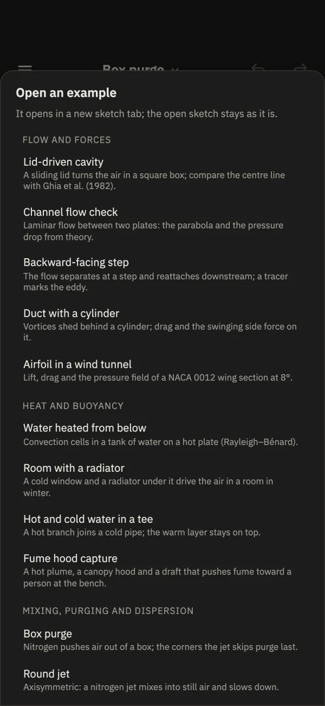
The 14 examples
Draw it
Draw lines, rectangles, circles, curves, freehand strokes, and dimensions in mm, with snapping, undo, and redo.
Give each part a role: wall, inlet, fan, open edge, filter, gas source, hot or cold wall, or probe.
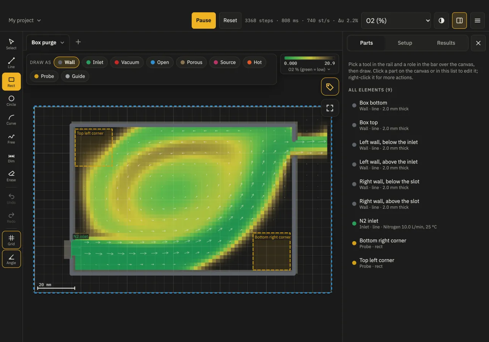
Photograph a sketch drawn on paper
- Draw on plain white paper with the 18 symbols shown in the app.
- Photograph the sheet. The app reads the lines and symbols and builds a sketch over the drawing.
- Check each part on the review screen and type the values you wrote. This version does not read handwriting.
- Set the scale and run it.
The photo is read on your device and is not uploaded. The sample drawing is free; importing your own photos is part of Sketch CFD Pro.
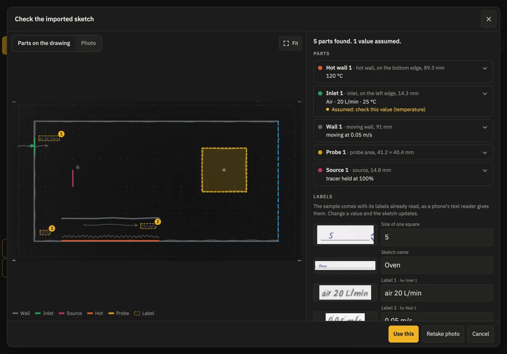
Simulate it
The flow runs live and follows every change you make.
- Speed m/s
- Pressure Pa
- Temperature °C
- Gas share %
- Show any of these fields, with flow arrows.
- Follow particles in the flow, such as dust settling in a chamber.
- Read probes, forces on parts (N), port flows (L/min), and filter pressure drops (Pa).
- Help explains the lattice Boltzmann model and what it leaves out.
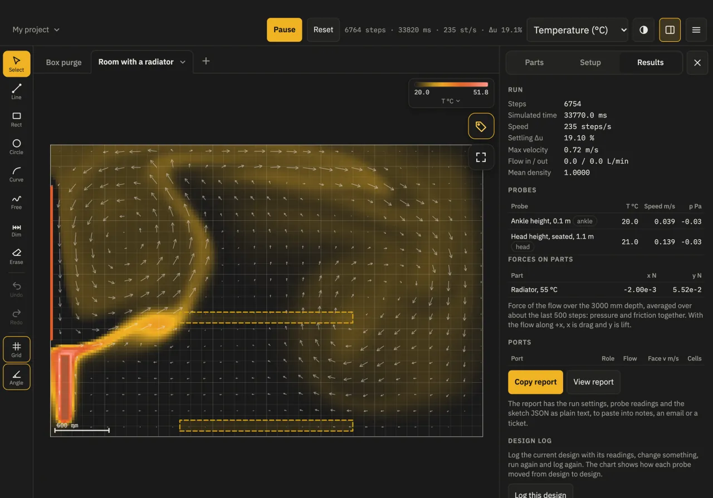
Learn with 14 examples
Each example has notes on what it shows, a published value to compare with where there is one, and what to try. All 14 are free to run and explore.
Flow and forces
- Lid-driven cavity
- Channel flow check
- Backward-facing step
- Duct with a cylinder
- Airfoil in a wind tunnel
Heat and buoyancy
- Water heated from below
- Room with a radiator
- Hot and cold water in a tee
- Fume hood capture
Mixing, purging and dispersion
- Box purge
- Round jet
- CO2 leak in a lab
- Wind around a building
Particles
- Dust settling chamber
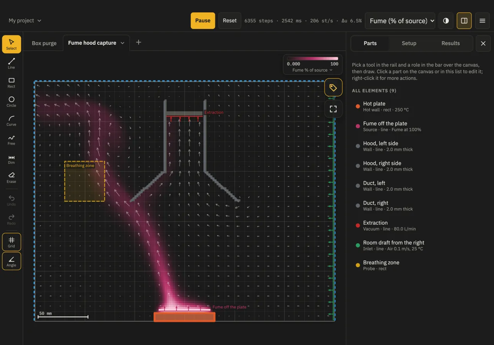
Free and Sketch CFD Pro
Free
- Run and explore all 14 examples.
- Draw walls of any shape in a wind tunnel (200 mm × 100 mm of air).
- Coarse and Medium resolution.
- Projects, files, and the help.
Sketch CFD Pro adds
- Design anything: inlets, outlets, fans, filters, heaters, gas sources, and probes, in any size.
- Gases and liquids, heat and buoyancy, and particles.
- Fine meshes for more detail.
- Edit the examples.
- Import your own paper drawings from a photo.
- Reports with the run settings, probe readings, and the sketch.
Sketch CFD Pro is an auto-renewable subscription, monthly or yearly, with a free trial for eligible new subscribers. If your subscription ends, your sketches still open and run. See the subscription terms and the questions about Sketch CFD Pro.
On your device
Drawing and calculation run on your iPhone or iPad. Your sketches and photos stay on your device.
-
Works offline
Drawing, the calculation, and the paper import need no connection.
-
No account
Open the app and start. There is nothing to sign up for.
-
No ads
The app shows no advertising.
-
Apple Pencil
Apple Pencil draws while your fingers pan and zoom. A keyboard, trackpad, or mouse works on iPad.
Educational use only
Sketch CFD is for education and learning only. Its results are estimates from a simplified two-dimensional model. The calculation is verified against published benchmark cases, such as the lid-driven cavity, flow around a cylinder, and a heated square cavity, but it has not been validated against measurements or tested in real-world scenarios. It is not a substitute for professional engineering analysis, testing, or applicable codes and standards. Do not use it for safety-critical, medical, or compliance decisions. You use the results at your own risk; to the extent the law allows, Journey On is not responsible for any loss or decision based on them. See the Terms of Use.
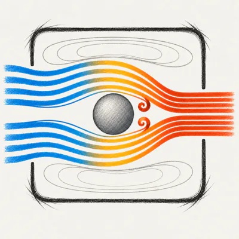
Sketch CFD for iPhone and iPad
Learn fluid flow by sketching. Requires iOS or iPadOS 16.4 or later.
Questions? Email support@journeyon.co or read the support page.